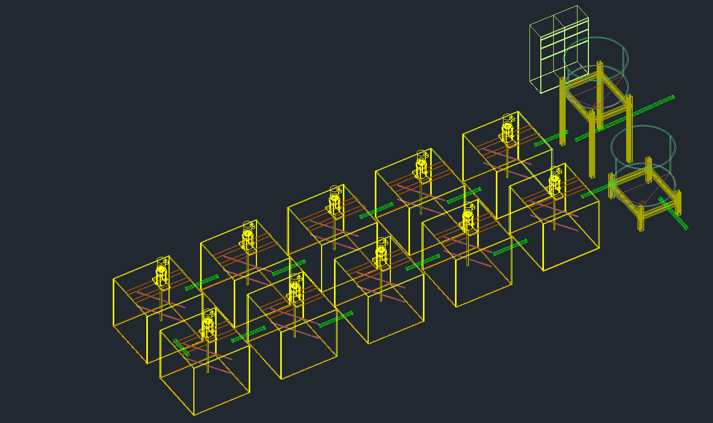

进水水质
水质预测-TN
水质预测-TP
工程概况

各池末端水质预测
污泥性质预测
长期运行趋势
建议调整参数 第1312环参数推荐
| 名称 | 当前值 | 推荐值 | 推荐范围 |
|---|---|---|---|
| 溶解氧(Do) | 5.42 | 6.16 | 5.65 ~ 7.75 |
| 过流速度(mm/min) | 12.35 | 24.8 | 19 ~ 31 |
| 污泥回流流量(mm/min) | 12.35 | 24.8 | 19 ~ 31 |
| 沉淀池液位(bar) | 0.8 | 0.12 | 0 ~ 0.2 |